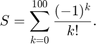
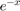
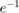
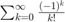
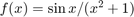
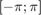
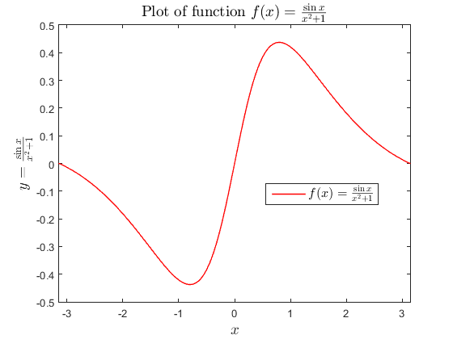
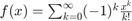
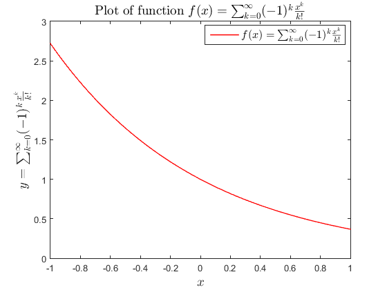

Lab 1 Assignment - Solution
Lab Instructor: Valeria Barra
Contents
DUE Tuesday 01/26/16
Exercise 1
Problem statement: Write a MATLAB program calculating

Solution:
n=100; % How far we’re summing up to S=0; % The sum variable S starts out at 0 for k = 0 : n % Loop over values of k from 1 to n if mod(k,2) == 0 % if k is even, the next line is executed S = S + 1 / factorial(k); else % otherwise, k is odd, the following line is executed: S = S - 1 / factorial(k); end % end of “if” statement end % end of the for loop % Show only the result, the last partial sum (so we put the display statement after the loop is over) disp( ['for k=', num2str(k), ': the last partial sum equals ', num2str(S) ]);
for k=100: the last partial sum equals 0.36788
Note: How do we check that this result is correct? Knowing from Calculus that the series represents the , in this case with x=1, ie .
CheckResult=exp(-1);
disp(['the actual sum up to 5 precision digits is: ',num2str(CheckResult)]);
the actual sum up to 5 precision digits is: 0.36788
Exercise 2
Problem statement: Write a MATLAB program calculating  with an error tolerance of 10^(-6).
Solution:
tolerance = 1e-6; % Set the error tolerance to 10^(-4) S = 0; % The sum variable S starts out at 0 term = 1; % Set to high enough value k = 0; % first term corresponds to k=0 sgn = 1; while abs(term) > tolerance % repeat until the next term is less than the % error tolerance term = sgn / factorial(k); % calculate the next (k-th) term S = S + term; % add k-th term to the sum variable S k = k + 1; % increment summation index k (in a “for” loop, this is done % automatically) sgn = -sgn; % this assignment avoids the use of the "if-else" statement % used in the previous exercise end disp( ['for k=', num2str(k-1), ': the last partial sum equals ', num2str(S) ]); % Show the final result % show that we reached the desired tolerance fprintf(['And we have reched the desired tolerance because the next term '... 'would\n have been:%e. \n'],term); % Note: the three low dots serve to continue % any long matlab statement in multiple lines
for k=10: the last partial sum equals 0.36788 And we have reched the desired tolerance because the next term would have been:2.755732e-07.
Exercise 3
Problem statement: plot the function  on the interval 
Solution:
X = -pi:0.01:pi; % Create a set of x values between -1 and 1, with a step of 0.01 Y=sin(X)./(X.^2 + 1); % The period in “.^” ensures that the operation is performed %on each element figure(1) %opens a new figure plot(X,Y,'r','LineWidth',1); % Plot y against x, note the plot option for line color % and width box on % to put a nice frame around your plot axis([-pi pi -.5 .5]); % min and max delimiters for axes values to display xlabel('$x$','interpreter','latex','fontsize',14); % label the plot and use % math fonts in latex %(for nice visualization of math symbols!) ylabel('$y=\frac{\sin x}{x^2 +1}$','interpreter','latex','fontsize',14); legend({'$f(x)=\frac{\sin x}{x^2 +1}$'},'interpreter','latex','fontsize',12,... 'location','best'); title('Plot of function $f(x) = \frac{\sin x}{x^2 +1}$','interpreter','latex',... 'fontsize',14);
Exercise 4
Problem Statement: Calculate  up to a tolerance of 10^(-6) and plot the values of the function for a set of 80 values of x on the interval [-1; 1]
Solution:
N = 80; % Number of points in the plot X = linspace(-1, 1, N); % Create a set of N values between -1 and 1 Y = zeros(N, 1); % create the corresponding Y array where we store the summation % for each value of little x tolerance= 1e-6; for i = 1 : N % Main part of the program: calculate the sum for each of the % N x-values x = X(i); % Assign the next x-value to the variable x S = 0; % initialize k = 0; % first term corresponds to k=0 sgn = 1; % initialize as positive for the first term in the series term=1; % initialize to a big enough value while abs(term) > tolerance % repeat until the next term is less than the % error tolerance % put here all commands needed to calculate the sum “S” for each value of x term = (sgn.*(x.^(k))) ./ factorial(k); % calculate the next (k-th) term % note: here little x is a scalar, so we don't actually need the . % operator, but it is a good practice S = S + term; % add k-th term to the sum variable S k = k + 1; sgn = -sgn; % this assignment avoids the use of the "if-else" statement % used in the previous exercise end Y(i) = S; %; store the result in the appropriate element of the y-array end figure(2) %opens a new figure plot(X,Y,'r','Linewidth',1) box on % to put a nice frame around your plot xlabel('$x$','interpreter','latex','fontsize',14); % label the plot and use % math fonts in latex ylabel('$y=\sum_{k=0}^{\infty}(-1)^k \frac{x^k}{k!}$','interpreter','latex',... 'fontsize',14); legend({'$f(x)=\sum_{k=0}^{\infty}(-1)^k \frac{x^k}{k!}$'},'interpreter','latex',... 'fontsize',12,'location','best'); title('Plot of function $f(x) =\sum_{k=0}^{\infty}(-1)^k \frac{x^k}{k!}$',... 'interpreter','latex','fontsize',14);